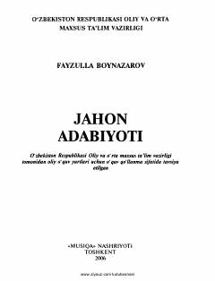

JAJahon adabiyotining taniqli namoyandalari hayoti va ijodiga bag'ishlangan o'quv qo'llanma.
Ushbu o'quv qo'llanmada antik davrdan boshlab to XXI asr boshigacha bo'lgan davrda yashab ijod etgan dunyoning eng yirik adib va shoirlari, ularning hayoti, ijodi va asarlari haqida qisqacha ma'lumotlar berilgan. Kitob oliy o'quv yurtlari talabalari va keng kitobxonlar ommasiga mo'ljallangan.